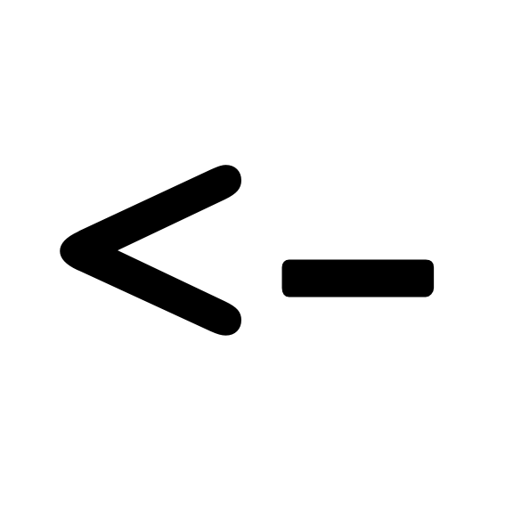
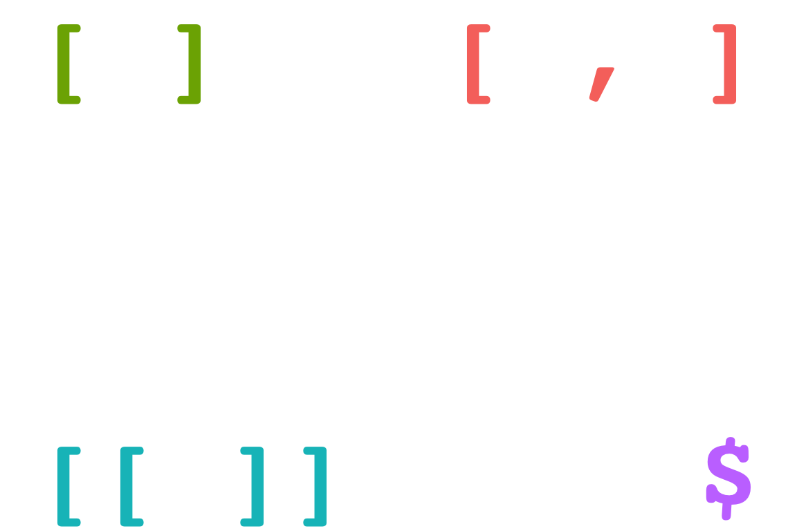
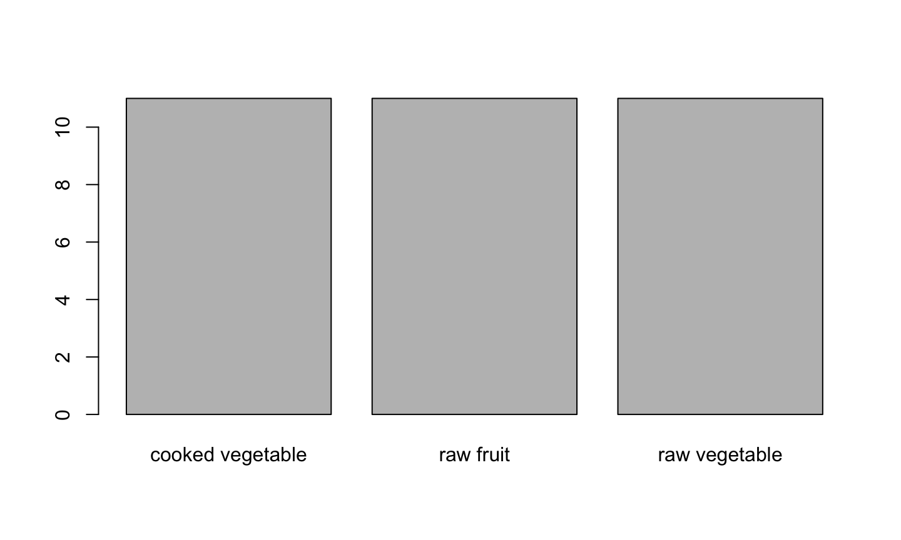
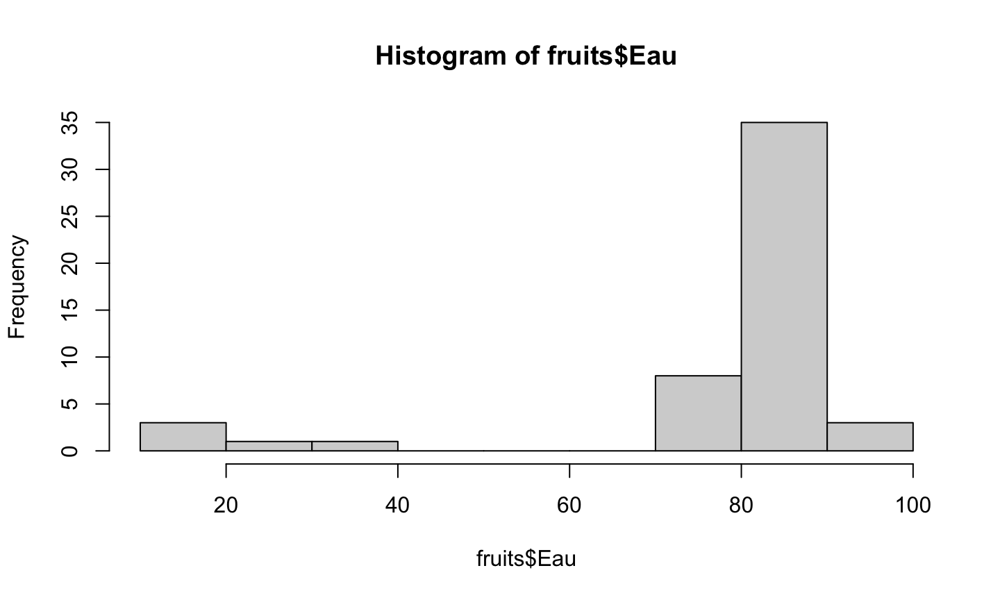
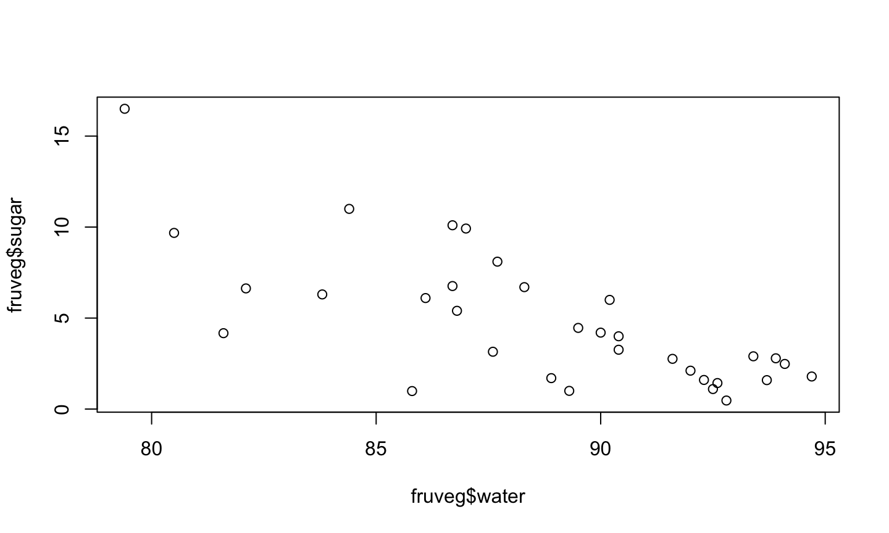

- Créer un projet dans ce dossier :
- Bien réfléchir au nom de ce projet
- Bien réfléchir à l’endroit où ce projet sera situé
- Créer un script
- Savoir où sont les données, et sous quel format
- Savoir ce que l’on veut faire !
Mercredi
> : R attend une commande à exécuter+ : la commande qui a été entrée n’est pas complète car
On peut effectuer toutes les opérations de base en R :
+), soustraction (-), multiplication (*), division (/), exponentiation (** ou ^)…appliquer les fonctions mathématiques de base :
log, log2, log10), exponentielle (exp) sinus (sin), cosinus (cos), tangente (tan)On peut combiner les opérations et les fonctions, et gérer les priorités avec des parenthèses !
:Comment créer une suite d’entier ?
c(1, 2, 3, 4)seq(1, 4, 1)1:4L’opérateur : est très utilisé en R. Sa syntaxe est la suivante
:\(j\) va créer une suite d’entiers de \(i\) à \(j\). Les entiers peuvent être négatifs ou positifs, et on peut peut avoir \(i < j\) ou \(i > j\), ou même \(i = j\).Attention à bien mettre des parenthèses dans le cas d’entiers négatifs!
3:7 : les entiers de 3 à 77:3 : les entiers de 7 à 3-3:7 : les entiers de -3 à 7-3:-7 : les entiers de -3 à -7-(3:7) : les entiers de -3 à -7<-Comment “sauvegarder” ces objets ?
En utilisant l’opérateur d’assignation

=a <- 1, b <- 1:10, a <- 2 etc.Règles absolues :
+, -, *, /, ^, **, etc.)NA, TRUE, FALSE, for, if, else etc.)Bonnes pratiques :
On peut appliquer des opérations à ces “vecteurs” !
a <- 1:5 a + 1 #> [1] 2 3 4 5 6 a * 2 #> [1] 2 4 6 8 10
Ces “vecteurs” sont des objets.
| Nom | Appelation officielle | Exemple |
|---|---|---|
| Vecteur | vector |
1:10 |
| Facteur | factor |
gl(2, 2) |
| Matrice | matrix |
matrix(1:4, 2, 2) |
| Tableau | data.frame |
mtcars |
| Liste | list |
list(a = 1, b = 1:10, c = "Hello!") |
| Fonction | function |
sin, exp, log |
Pour connaître la classe d’un objet : class(objet).
| Nom | Appellation officielle | Exemple |
|---|---|---|
| Entier (\(\mathbb Z\)) | integer |
1:10, (ou 1L) |
| Réel (\(\mathbb R\)) | double |
2.3, 1/3, etc… |
| Caractères | character |
month.name, "Bonjour" |
| Booléen | logical |
TRUE |
MATH., néol. Qui est relatif aux théories du logicien et mathématicien anglais George Boole.
– Trésor de la Langue Française informatisé
TRUE (ou bien T) et FALSE (ou bien F)==, !=, <, >, <=, >=!, &, |, xor1 == 2!(5 > -6)(1 <= 10) | (1 > 0)log(1) != 0Les objets qui ne contiennent qu’un seul type de données : vecteurs et matrices.
Les objets pouvant contenir des données mixtes : tableaux et listes.
La flexibilité a un coût : on ne peut plus faire certaines opérations !
Les objets ayant des “dimensions” : vecteurs, tableaux et matrices
Les objets pour qui cela ne signifie rien ou presque : listes et fonctions
data("fruveg", package = "intro2r")
fruveg
#> # A tibble: 33 × 19
#> name group energy water proteins carbohydrates lipids sugar fibers alcohol calcium copper iron magnesium
#> <chr> <chr> <dbl> <dbl> <dbl> <dbl> <dbl> <dbl> <dbl> <dbl> <dbl> <dbl> <dbl> <dbl>
#> 1 Mushroom raw … 25.8 92.6 2.37 1.88 0.23 1.43 1.72 0 7.78 0.32 0.69 10.9
#> 2 Zucchini raw … 20.1 94.7 1.23 1.8 0.26 1.79 1.05 0 18.7 0.052 0.36 17.5
#> 3 Leek raw … 33.4 87.6 1.49 4.9 0.25 3.15 2.27 0 50.7 0.087 1.5 19
#> 4 Tomato raw … 21 94.1 0.86 2.49 0.26 2.48 1.2 0 8.14 0.029 0.12 10.1
#> 5 Broccoli raw … 35.2 88.9 3.95 1.7 0.48 1.7 2.9 0 45.9 0.059 0.76 21.9
#> 6 Green bean raw … 31.8 90.4 1.85 4.14 0.21 3.26 2.85 0 48.5 0.063 1.02 21
#> 7 Red beet raw … 50.9 86.7 1.74 9.1 0.24 6.76 2.55 0 22.1 0.098 0.7 19
#> 8 White cabbage raw … 35.1 90 1.38 4.63 0.6 4.2 3.5 0 59 0.02 0.3 11
#> 9 Squash raw … 17.9 92.3 1.1 1.6 0.17 1.6 1.3 0 28.5 0.061 0.6 16.5
#> 10 Pumpkin raw … 33.8 91.6 1 6 0.1 2.76 0.5 0 21 0.13 0.8 12
#> # ℹ 23 more rows
#> # ℹ 5 more variables: manganese <dbl>, phosphorus <dbl>, potassium <dbl>, zinc <dbl>, vitaminC <dbl>
dataRData) : loadread.tableopenxlsx::read.xlsdata() pour avoir une liste (presque ?) exhaustive.data("nom_des_data", package = "nom_du_package")data(mtcars)DNaselibrary(ggplot2) ; data(diamonds)library, require, data"bonjour" est équivalent à 'bonjour'.fruveg
| Opérateur | Vecteurs | Matrices | Tableaux | Listes |
|---|---|---|---|---|
[ ] |
x | x | x | |
[ , ] |
x | x | ||
[[ ]] |
x | x | ||
$ |
x | x |
[ , ]fruveg[1, ]fruveg[, 2]fruveg[-3, ]fruveg[, -4]fruveg[c(1, 3), ]fruveg[, c(2, 4)]fruveg[-c(5, 7), ]fruveg[, -c(6, 8)]Pour sélectionner une plage entière de lignes ou de colonnes adjacentes :
fruveg[11:17, ]fruveg[, 3:5]fruveg[-(1:3), ]fruveg[, -(1:5)]Que se passe-t-il quand on oublie les parenthèses dans la commande fruveg[-(1:3), ] ? Commentez !
Faites de même avec le jeu de données mtcars.
$La syntaxe donnees$cible permet de sélectionner la colonne cible du tableau donnees.
fruveg$waterfruveg$groupExtrayez la colonne de la teneur en sucres de la table des fruits et légumes… de deux façons différentes !
Créez un objet contenant la teneur en sucres : quelle est la classe de cet objet ?
Exemples :
i <- 1:10eau <- fruveg$watereau[i]Créez un vecteur groupe contenant les groupes de fruits et légumes. Donnez deux façons différentes d’extraire les dix premières valeurs de ce vecteur.
Comment extraire les… * fruits et légumes dont la teneur en eau est supérieure à 90% ? * fruits crus ? * légumes cuits contenant moins de 1g/100g de sucres ?
Réponse : en utilisant des vecteurs booléens
fruveg$water >= 90fruveg[fruveg$water >= 90,]Ne pas oublier la virgule !
Pour un vecteur v :
v[bool] extrait les valeurs de v pour lesquelles bool est vrai (TRUE). Contrainte : v et bool doivent contenir le même nombre d’éléments.Pour un tableau tab :
tab[brow, ] pour extraire les lignestab[, bcol]brow doit avoir autant d’éléments que tab de lignesbcol doit avoir autant d’éléments que tab de colonnesVous verrez souvent des opérations logiques à l’intérieur des crochets carrés : cela permet d’aller plus vite !
Par exemple, en deux étapes :
bool <- fruveg$group == "cooked vegetable" & fruveg$sugar <= 1fruveg[bool, ]Devient, en une étape :
fruveg[fruveg$group == "cooked vegetable" & fruveg$sugar <= 1, ]On peut combiner deux méthodes d’extraction de données pour un tableau : une sur les lignes et une sur les colonnes !
Par exemple : tab[brow, icol], où brow est un vecteur de booléens et icol un vecteur d’indices.
Construisez la sous-table contenant la teneur en protéines, en glucides et en lipides des fruits crus.
En R, on peut donner des “noms”…
Pourquoi ? Pour pouvoir disposer d’une nouvelle méthode d’extraction de données !
On utilise :
rownames(tab) pour connaître le nom des lignescolnames(tab) pour connaître le nom des colonnesEt, en bonus, on peut :
rownames(tab) <- new1colnames(tab) <- new2Et, en super bonus, on peut :
rownames(tab)[sel1] <- new1rownames(tab)[sel1] <- new2La syntaxe obj[i] <- newvalue (et ses variations) peut être utilisée pour tous les types d’objets indiçables. Mais il faut l’utiliser avec prudence !
Exemple : fruveg$energy[1:10] <- 0
Que s’est-il passé ? Au secours !!!!
Pour revenir en arrière : data("fruveg", package = "intro2r")
Exemple :
fruveg[, "energy"],fruveg[, "group"],fruveg[, c("energy", "group")],fruveg[, -"group"] ?| Mode d’extraction | Exemples |
|---|---|
| Indices | fruveg[, 2] |
| Booléens | fruveg[fruveg$name == "Apple", ] |
| Noms | fruveg$name ou fruveg[,"name"] |
Lister le maximum de façons possibles d’extraire du tableau fruveg les fruits crus sucrés riches en Vitamine C !
c() permet de combiner des valeurs dans un vecteur. Attention, tout doit être du même “type” !seq permet de créer des suites.rep permet de créer des vecteurs en répétant des valeurs. Ex: rep(c("a", "b"), c(3, 4))Les facteurs sont une particularité de R !
factor ou as.factorfactor(fruveg$group)matrix, rbind et cbind pour créer des matrices. Attention, tout doit être du même “type” !data.frame ou as.data.frame pour créer desDirectement à la création de l’objet. Ex: x <- c(a = 1, b = 2), d <- data.frame(a = 1:26, b = letters)
Ou bien après la création de l’objet :
names(obj) <- lesNoms pour un vecteurrownames(obj) <- lesLignes pour les lignes d’un tableau ou d’une matrice,colnames(obj) <- lesColonnes pour les colonnes d’un tableau ou d’une matrice.Créez un facteur à partir des groupes de fruits et légumes, puis testez la commande suivante :
factor(
fruveg$group,
levels = c(
"raw vegetable",
"cooked vegetable",
"raw fruit"))
Que se passe-t-il ? Sauvez le résultat dans un objet et faites un diagramme en bâton avec ! Commentez !
Il s’agit d’estimer un caractéristique statistique d’un ensemble de données avec une seule valeur.
| Paramètre | Grandeur statistique | Commande |
|---|---|---|
| Position | Moyenne | mean |
| Position | Médiane | median |
| Position | Minimum | min |
| Position | Maximum | max |
| Dispersion | Variance | var |
| Dispersion | Ecart-type | sd |
| Dispersion | Intervalle inter-quartiles | IQR |
| Lien | Covariance | cov |
| Lien | Corrélation | cor |
Permet de mesurer le degré de co-variation de deux variables :
\[ \operatorname{cov}(x, y)=\frac{1}{n-1} \sum_{i=1}^{n}\left(x_{i}-m_{x}\right)\left(y_{i}-m_{y}\right) \]
C’est une covariance normalisée entre -1 et 1 !
\[ \operatorname{cor}(x, y)=\frac{\operatorname{cov}(x, y)}{\sqrt{\operatorname{var}(x)} \sqrt{\operatorname{var}(y)}} \]
C’est la corrélation (de Pearson) calculée sur les rangs !
\[
\rho = \operatorname{cor}(r_x, r_y),
\] avec \(r_x\) le vecteur des rangs de \(x\) (rank(x)), et \(r_y\) le vecteur des rangs de \(y\) (rank(y)).
\[ \tau = \displaystyle \frac{n_C - n_D}{n_0}, \] avec \(n_C\) le nombre de paires concordantes, \(n_D\) le nombre de paires discordantes et \(n_0\) le nombre total de paires de points.
Calculez
Appliquez la fonction summary aux données fruveg.
summary pour obtenir des statistiquesstr pour la structure des donnéestable pour faire des tables de comptageseq_along pour créer un vecteur d’indices de même longueur qu’un vecteur donnésum pour calculer la somme de nombressort, order et rank pour ordonner, et calculer les rangsrowSums et colSums pour calculer les sommes des lignes et colonnes d’une table,rowMeans et colMeans pour calculer les moyennes des lignes et colonnes d’une table,barplot : diagrammes en bâtonshist : histogrammesplot : nuages de pointsbarplotPermet de réaliser des diagrammes en bâtons :
barplot(table(fruveg$group))

histPermet de réaliser des histogrammes :
hist(fruveg$water)

plotPermet de tracer des nuages de points :
plot(fruveg$water, fruveg$sugar)

Faire un histogramme de la teneur en Vitamine C des fruits crus.
Lire des fichiers tabulés : read.table, read.csv, read.csv2, read.delim, read.delim2.
Lire des fichiers Excel : openxlsx::read.xlsx(, readxl::read_excel)
Mais on peut utiliser aussi le menu “Import Dataset” de Rstudio !
class, dim, summary etc.